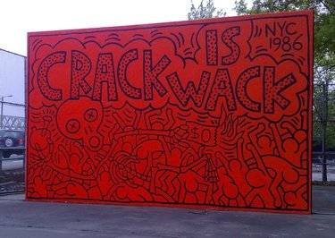

Crack Is Wack
Keith Haring · 1986 · Paint on a concrete wall (mural)
In copyright. Look and learn: shown for study, not for download.
Keith Haring painted the first version on 27 June 1986, uncommissioned and without permission, on the wall of an abandoned handball court at Second Avenue and East 128th Street. He was arrested for vandalism, pleaded guilty to disorderly conduct and paid a $100 fine. After the Parks Department painted over a vandalised version, its commissioner invited him back, and he repainted the same wall on 3 October 1986. He made it for his studio assistant Benny, who had started using crack.